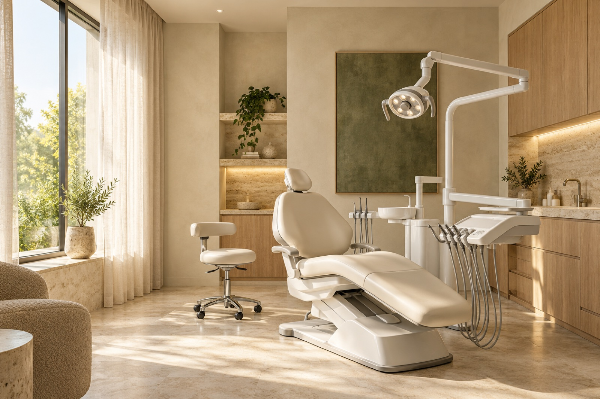

Primero, te escuchamos.
Tu historia, tus dudas y lo que esperás del tratamiento son el punto de partida.
Sentite bien cuando sonreís. Odontología integral, estética e implantes, con un tratamiento pensado para vos.
En el corazón de Corrientes.Una mirada integralSalud y estética, en un mismo lugar.
Tu tratamiento, a tu medidaUn plan que parte de escucharte.
Cerca de vosAtención en Corrientes Capital.
Sea cual sea tu punto de partida, encontrá la atención que necesitás. Empezamos por conocer tu sonrisa y lo que querés para ella.
Controles, prevención y limpieza dental. Una evaluación integral para cuidar tu salud bucal y acompañarte en cada etapa.
Alternativas para reemplazar piezas dentales y recuperar función y estética. La evaluación clínica permite definir el plan adecuado para tu caso.
Alineadores transparentes y brackets cerámicos. Consultá qué opciones pueden acompañarte hacia una sonrisa más alineada, según tu diagnóstico.
Si tenés dolor o una situación odontológica imprevista, comunicate con la clínica para consultar disponibilidad y coordinar la atención.
Detrás de cada consulta hay una persona. Por eso, nuestra mirada combina atención odontológica integral con un trato cercano.
Tu historia, tus dudas y lo que esperás del tratamiento son el punto de partida.
Un equipo interdisciplinario para abordar salud, función y estética como partes de una misma sonrisa.
Información clara sobre las opciones de tratamiento, para que puedas dar el próximo paso con confianza.

No necesitás tener todas las respuestas para pedir una consulta. Contanos qué te gustaría mejorar y empecemos por ahí.
Y si tu pregunta no está acá, escribinos.
Estamos para orientarte.
Podés escribirnos por WhatsApp al +54 379 475 9547 o llamarnos. Contanos el motivo de tu consulta para coordinar una visita según disponibilidad.
La clínica cuenta con convenios con obras sociales. Consultanos por tu cobertura y el tratamiento que necesitás antes de coordinar tu turno.
Se define a partir de una evaluación clínica. En la primera consulta podés conversar sobre tus inquietudes y conocer las alternativas para tu caso.
Llamanos al +54 379 475 9547 para consultar disponibilidad y coordinar la atención. También podés enviar tu consulta por WhatsApp.
Contanos qué necesitás.
Coordinemos tu primera consulta.